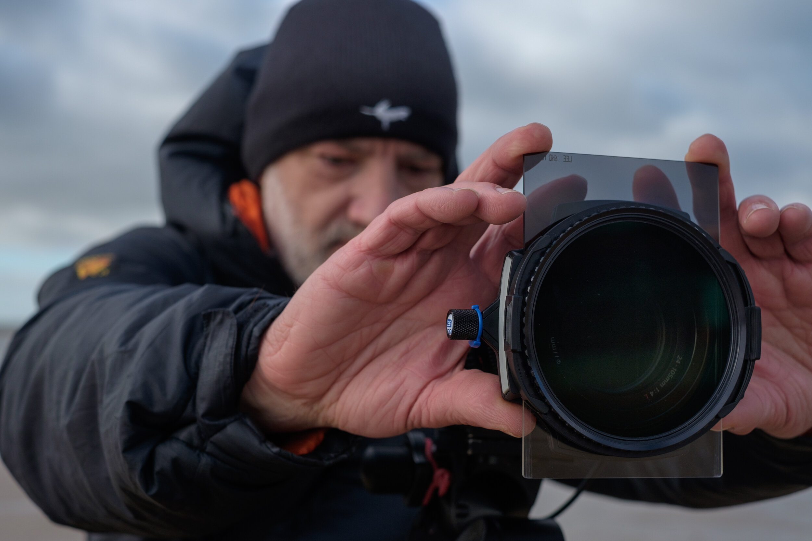

The nature is magical, full of beauty and grace
I am welcoming you take a step into my world
My name is Justin Minns and I am a Landscape photographer. Born in England and love to explore the world. I am an award-winning professional landscape photographer, best known for atmospheric images of East Anglia.
I am welcoming you to relax, breath slowly and enjoy my photographs.
I live in a quiet part of Suffolk in the heart of East Anglia. There where I am takes the most photographs.
I have visited many countries, like Iceland, Canada, Wales and many more...
But my heart belongs to the England. There's no place like the beaches of Essex, the castles of Dorset and the fields of Norfolk.
The joy of landscape photograph for me is the being there. Being a part of nature and witnessing its wonders. Those wonderfully unpredictable conditions and fleeting moments of light that make the heart beat a little faster.
The thrill of watching the first light of the day creep over the frozen stillness of a wintry landscape, while the air and my fingers tingle with the cold, and the challenge of capturing the atmosphere of moments like this is what it is all about.
In the bottum picture, me in action
For more impression , click here 